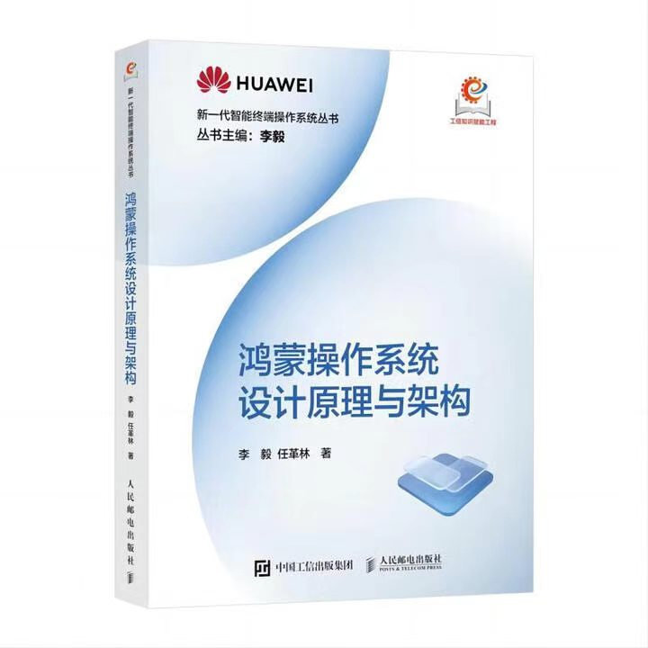

精选课程
鸿蒙操作系统设计原理与架构
课程简介
本课程以《鸿蒙操作系统设计原理与架构》为核心教材，面向对操作系统感兴趣的开发者、鸿蒙生态参与者与高校师生，系统学习鸿蒙操作系统的设计理念、整体架构与关键子系统实现原理。
课程内容覆盖：
• 操作系统发展史与下一代操作系统关键特征
• HarmonyOS 设计理念与部件化架构原理
• 统一内核（LiteOS-M / LiteOS-A / Linux 内核）
• 驱动子系统与 HDF 驱动框架
• 分布式软总线、数据管理与硬件平台
• 方舟编译运行时、UI 框架与图形子系统
• 安全子系统、DFX 框架与文件管理

核心教材
《鸿蒙操作系统设计原理与架构》
作者：李毅、任革林 著
出版社：人民邮电出版社（2024 年 7 月）
ISBN：978-7-115-64446-6
丛书：新一代智能终端操作系统丛书（工信知识赋能工程）
本书由华为 OpenHarmony 首席架构师李毅、OpenHarmony 社区 PMC 主席任革林领衔编写，内容整理自华为官方文档，系统讲解鸿蒙操作系统的设计背景、设计理念与设计原则，并对统一内核、驱动子系统、分布式软总线、方舟编译运行时、UI 框架、图形子系统、多媒体、安全、DFX、文件管理等关键子系统的技术架构与设计思路进行详细解析，适合操作系统研究者、鸿蒙生态参与者和相关专业高校师生学习参考。